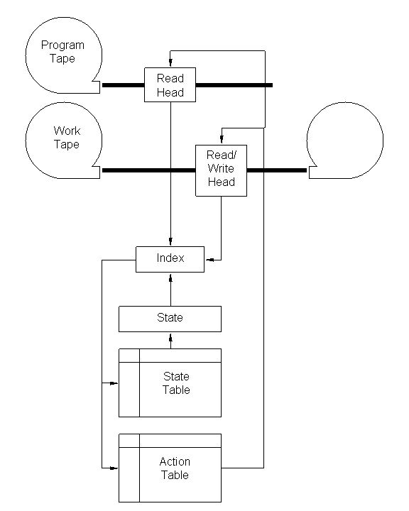
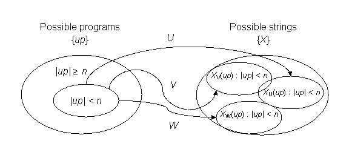

Autres liens :
|
- Théorie de l'information algorithmique
- Machines de Turing et problème d'arrêt
- Thèse de Church-Turing
- Machines de Turing universelles
- Complexité de Kolmogorov
- Quelques autres concepts
- Programmes et codes auto-délimitants
- Sélection de la M.T.U.
- Probabilité d'arrêt de Chaitin : Omega
- Références
- Liens
Théorie de l'information algorithmique
Gregory Chaitin[1], Ray Solomonoff, et Andrei Kolmogorov ont développé une vision différente de l'information par rapport à celle de Shannon. Plutôt que de considérer l'ensemble statistique de messages provenant d'une source d'information, la théorie de l'information algorithmique examine les séquences individuelles de symboles. Ici, l'information H(X) est définie comme la taille minimale d'un programme nécessaire pour générer la séquence X.
Cet article met en lumière certains des concepts principaux de la Théorie de l'Information Algorithmique. La connaissance de ce sujet peut être utile lors de débats avec des créationnistes dont l'utilisation de concepts issus à la fois de la Théorie de l'Information Classique et de la Théorie de l'Information Algorithmique pourrait être imprécise. Cet article ne constitue qu'un survol des idées majeures. Pour les démonstrations mathématiques et un contexte plus détaillé, consultez les documents cités et les liens.
Machines de Turing et le problème d'arrêt[Haut]
Comprendre la théorie de l'information algébrique nécessite des connaissances sur les machines de Turing. Alan Turing[2] a montré qu'il est possible d'inventer une seule machine U capable de calculer toute suite calculable. Les notations de Turing sont quelque peu difficiles, mais l'idée de base est la suivante :
Les éléments d'une machine de Turing sont une bande de programme avec une tête de lecture, une bande de travail avec une tête de lecture/écriture, un état (représenté par un nombre), un tableau d'états et un tableau d'actions. La bande de programme est de longueur finie et contient une séquence de symboles. La bande de travail est initialement vide. À chaque cycle de la machine, l'état est remplacé par la valeur de recherche dans le tableau d'états. L'index de recherche est une combinaison de l'état actuel, du symbole lu sur la bande de programme et du symbole lu sur la bande de travail.
Le tableau d'action contrôle les bandes. Les actions suivantes sont autorisées :
- Arrêtez
- Avancez la bande du programme d'un symbole vers la droite
- Avancez la bande de travail d'un symbole vers la droite
- Rembobinez la bande de travail d'un symbole vers la gauche
- Effacez le symbole actuel sur la bande de travail
- Écrivez l'un des symboles R sur la bande de travail (il y en a R de ces actions).
Nous pouvons considérer les bandes de la machine de Turing comme des chaînes ; c'est-à-dire des suites de symboles. Nous appellerons la chaîne de programme p, et la chaîne de résultat sur la bande de travail X. Le programme p produit la chaîne X sur la machine de Turing T. Étant donné que nous avons la machine de Turing T, la chaîne X peut être représentée par p. Nous pouvons également considérer p et X comme des nombres, puisque les nombres sont représentés comme des suites de symboles.
Souvent, nous parlons de machines de Turing binaires, pour lesquelles l'ensemble de symboles sur les deux bandes est constitué de 0 et de 1. Ce n'est pas nécessairement le cas. Nous pouvons avoir n'importe quel nombre de symboles. Maintenant, évidemment, nous ne pouvons pas vraiment avoir une bande de travail infiniment longue, mais la machine de Turing est utilisée pour des problèmes théoriques, donc nous pouvons imaginer que nous le faisons.
Un diagramme d'une machine de Turing est montré ci-dessous :
 |
Pour une bonne description des machines de Turing, consultez l'Encyclopédie de philosophie de Stanford[3]. Notez que les machines de Turing théoriques possèdent des bandes de travail infinies, ce qui, bien entendu, ne peut être construit. Certains problèmes ne sont donc pas exécutables sur des machines de Turing physiques réelles.
Turing a conçu sa machine théorique pour résoudre le Entscheidungsproblem ou problème de décision ; c'est-à-dire, s'il est possible en logique symbolique de trouver un algorithme général qui décide, pour des énoncés du premier ordre donnés, s'ils sont universellement valides ou non.
Les racines modernes du Entscheidungsproblem remontent à un discours prononcé en 1900 par David Hilbert. [4] Hilbert avait espéré qu'il serait possible de développer un algorithme général pour décider si un ensemble d'axiomes était contradictoire. Kurt Gödel [5] a montré que, dans tout système axiomatique pour l'arithmétique des nombres naturels, certains énoncés existent qui ne peuvent pas être prouvés ou infirmés au sein des axiomes du système. C'est ce qu'on appelle le théorème d'incomplétude de Gödel, et il a démontré que le deuxième problème de Hilbert ne pouvait pas être résolu.
Turing, s'appuyant sur les travaux de Gödel, a prouvé que le Entscheidungsproblem n'était pas soluble. Alonzo Church, indépendamment de Turing, a montré la même chose.
Turing a utilisé le problème d'arrêt pour sa démonstration. Le problème d'arrêt est un problème de décision. Il pose la question : étant donné une description d'un algorithme et ses conditions initiales, peut-on montrer que l'algorithme s'arrêtera ? Un algorithme produisant les chiffres de π est un exemple d'algorithme non arrêtant. π est un nombre irrationnel et transcendant ; il ne peut pas être exprimé comme un polynôme à coefficients rationnels et possède donc un nombre infini de chiffres). Turing a prouvé qu'aucun algorithme général n'existe capable de résoudre le problème d'arrêt pour toutes les entrées possibles, et par conséquent que le Entscheidungsproblem est insoluble.
Thèse de Church-Turing [Sommaire]
La Thèse de Church-Turing est une synthèse de la thèse de Church et de la thèse de Turing. Elle stipule essentiellement que, chaque fois qu'il existe une méthode efficace pour obtenir les valeurs d'une fonction mathématique, cette fonction peut être calculée par une machine de Turing. L'idée de base est que, si vous avez un calcul qui peut être effectué par n'importe quelle machine (déterministe) qui peut être mise en œuvre de manière efficace, une machine de Turing peut effectuer ce calcul.
Deux visions concurrentes de la thèse de Church-Turing ont été publiées par Copeland[6] et Hodges[7] (l'argument est, du moins en partie, sur la manière dont fortement énoncée une thèse Church et Turing auraient accepté, et s'ils ont adhéré au concept décrit par Gandy comme la thèse M).
Machine de Turing universelle [Sommaire]
Il ne serait pas pratique de construire une nouvelle machine de Turing à chaque fois qu'on souhaite effectuer un calcul, donnant ainsi naissance au concept de machine de Turing universelle (MTU). Une machine de Turing universelle (MTU) est définie comme une machine de Turing capable de simuler toute autre machine de Turing. Si nous disposons d'une MTU, nous pouvons la programmer pour qu'elle se comporte comme n'importe quelle machine de Turing que nous souhaitons.
Puisqu'une machine de Turing peut être décrite par ses tables d'état et d'action, elle peut être représentée sous forme de chaîne. Si p est un programme sur une machine de Turing T qui produit la chaîne X sur la bande de travail, alors sur une machine de Turing universelle, nous pouvons charger une représentation sous forme de chaîne de T, exécuter le programme p et obtenir X. Nous utiliserons le symbole u pour la représentation de T sur U. Par conséquent, si <u><p> est l'entrée de U, elle produit X. Notez que u dépend à la fois de T et de U, tandis que p dépend de X et de T.
Il existe un nombre infini de machines de Turing universelles. Certaines recherches ont été menées pour déterminer à quel point elles peuvent être petites. Marvin Minsky a découvert en 1962 une UTM à 7 états et 4 symboles[8]. Yurii Rogozhin a découvert plusieurs petites UTM[9]. Si nous les décrivons comme (m, n) où m est le nombre d'états et n est le nombre de symboles, Rogozhin a ajouté (24, 2), (10, 3), (5, 5), (4, 6), (3, 10) et (2, 18) à ceux de Minsky (7, 4). Stephen Wolfram signale une UTM (2, 5) [10].
Complexité de Kolmogorov[ Sommaire]
Kolmogorov, Chaitin et Solomonoff ont indépendamment développé l'idée de représenter la complexité d'une chaîne en fonction de sa compressibilité, en la représentant comme un programme.
Étant donné une machine de Turing universelle U, le contenu informationnel algorithmique, également appelé complexité algorithmique ou complexité de Kolmogorov (KC) H(X) de la chaîne X est défini comme la longueur du programme le plus court p sur U produisant la chaîne X. Le programme le plus court capable de produire une chaîne est appelé un programme élégant. Le programme peut également être noté X*, où U(X*) = X, et peut lui-même être considéré comme une chaîne. Étant donné un programme élégant X*,
H(X) = |X*|
où |X*| est la taille de X*.
La terminologie dans la littérature est variable. Par exemple, certains auteurs utilisent CM(X) ou I(X) pour H(X) sur la machine M, ou I(X) pour H(X), ou min(p) pour |X*|.
Une chaîne X est dite aléatoire algorithmiquement si son programme élégant X* ne peut pas être exprimé de manière plus courte que X ; autrement dit, si sa complexité algorithmique est maximale. En d'autres termes, elle ne peut pas être compressée sur la UTM de référence.
Une chaîne infinie et aléatoire de manière algorithmique ne contient pas de données redondantes. Il peut être démontré que la proportion de chaque symbole dans la chaîne est approximativement égale, avec une distribution aléatoire. Si une telle chaîne représente un nombre compris entre 0 et 1 (l'intervalle unitaire), alors ce nombre est un nombre normal ou nombre de Borel après les travaux de Emile Borel.
Tous les nombres normaux ne sont pas algorithmiquement aléatoires. Un nombre peut être normal mais défini comme un programme court sur une UTM. De même, tous les nombres algorithmiquement aléatoires ne sont pas normaux. Les chaînes de longueur finie sont considérées comme algorithmiquement aléatoires par définition. Toute chaîne de longueur finie peut être considérée comme un nombre rationnel dans une certaine base, et les nombres rationnels ne peuvent pas être normaux dans aucune base.
Plusieurs points doivent être soulignés concernant la complexité de Kolmogorov :
- La KC ne peut pas être
calculée. Lorsque nous testons si un programme p va
générer la chaîne X sur U, nous ne pouvons jamais savoir
si p va s'arrêter (comme l'a démontré Turing). Même si nous avons
trouvé un programme p1 qui génère X sur
U, nous ne pouvons pas savoir s'il existe un programme plus court
p0 qui génère X sur U. On peut
estimer des bornes pour la KC, mais le calcul absolu de la KC pour une
chaîne est théoriquement impossible.
- La KC dépend de
l'UTM de référence sélectionnée, et non seulement de la chaîne. Si vous avez
deux UTM U et V, la longueur du programme le plus court
pU pour produire X sur U n'a pas
nécessairement à correspondre à la longueur du programme le plus court
pV pour produire X sur V. En d'autres
termes, HU(X) n'est pas égal à
HV(X) en général. Normalement, cela
n'a pas d'importance car l'UTM de référence est donnée et toute
discussion est relative à celle-ci, ou il y a une hypothèse implicite
que tout UTM sélectionné aura un surcoût faible par rapport aux
chaînes algorithmiquement aléatoires très grandes dont il est question. Cela
a de l'importance lorsque vous n'avez pas d'UTM de référence, et que
vous ne parlez pas de chaînes algorithmiquement aléatoires très grandes
(voir ci-dessous, sous Sélection de l'UTM).
- Il doit y avoir
des chaînes algorithmiquement aléatoires. C'est une conséquence du
principe des tiroirs. Il y a 2n
chaînes de longueur n, et
2n-1 programmes de longueur inférieure à n.
Il y a tout simplement pas assez de programmes plus courts pour générer toutes
les 2n chaînes de longueur n.
- La plupart des
chaînes sont au moins proches d'être algorithmiquement aléatoires. C'est un autre
conséquence du principe des tiroirs. Il y a
2n-k-1 programmes de longueur inférieure à
n-k, et 2n - (2n-k) =
2n(1-2-k) programmes de longueur comprise entre
n-k et n. Prenons k = 10. Au moins 99,9% des chaînes de
longueur n ont une KC d'au moins n-10.
- La KC est bornée
par la longueur d'une chaîne plus une constante. Un programme très simple est
imprimer X. Son surcoût sur un UTM donné est une constante
c. La KC pour n'importe quelle chaîne sur cet UTM ne peut pas dépasser
la longueur de la chaîne + c. La constante dépend de
l'UTM.
- Théorème
d'invariance. Si nous avons un UTM U et n'importe quelle autre TM V,
HU(X) ≤HV(X) + c pour
tous X. La constante c dépend de U et
V mais pas de X.
- Algorithmiquement aléatoire n'est pas la même chose que
statistiquement aléatoire. Nous pensons au lancer de pièces, au lancer
de dés et à la désintégration atomique comme des processus non déterministes ou stochastiques,
et nous appelons cela aléatoire. L'aléatoire algorithmique a une
définition différente et est un concept différent, même si les chaînes
algorithmiquement aléatoires très longues ont des distributions de symboles
avec des propriétés statistiques. Les chaînes algorithmiquement aléatoires sont
soit calculables et déterministes, soit non calculables.
- La KC n'est pas la même chose que la complexité computationnelle. Théorie de la complexité computationnelle traite de la quantité de ressources de calcul (temps et mémoire) nécessaires pour résoudre un problème. La complexité computationnelle n'a rien à voir avec le fait qu'une chaîne soit compressible sur un UTM donné.
Quelques autres concepts [Sommaire]
Contenu d'information conjoint. Supposons que nous ayons un UTM avec deux bandes de travail plutôt qu'une seule. Un programme pourrait produire deux chaînes, une sur chaque bande de travail. Alternativement, il pourrait produire deux chaînes sur une seule bande de travail, l'une après l'autre (éventuellement séparées par un espace vide). Ou nous pourrions exécuter le même programme sur deux UTM différents fonctionnant en parallèle. Dans tous les cas, nous avons un programme produisant deux chaînes. Le contenu d'information conjoint H(X,Y) des chaînes X et Y est la taille du plus petit programme pour produire simultanément X et Y.
Contenu informationnel conditionnel. Le conditionnel ou relatif contenu informationnel H(X|Y) correspond à la taille du plus petit programme pour produire X à partir d'un programme minimal pour Y. Notez que H(X|Y) nécessite Y* et non Y. Chaitin a montré que :
H(X,Y) ≤ H(X) + H(Y|X) + O(1)
où O(1) est une constante représentant les surcoûts de calcul.
Contenu d'information mutuelle. Le contenu d'information mutuelle H(X : Y) est calculé par l'une des méthodes suivantes :
H(X : Y) = H(X) + H(Y) - H(X,Y)
H(X : Y) = H(X) - H(X|Y) + O(1)
H(X : Y) = H(Y) - H(Y|X) + O(1)
Les chaînes X et Y sont algorithmiquement indépendantes si
H(X,Y) ≈ H(X) + H(Y)
dans ce cas, le contenu d'information mutuelle est faible.
Il faut souligner que, malgré une similitude dans la notation et la forme avec la théorie classique de l'information, la théorie algorithmique de l'information traite des chaînes individuelles, tandis que la théorie classique de l'information traite du comportement statistique des sources d'information. On peut établir un lien entre la complexité de Kolmogorov moyenne et l'entropie de Shannon, mais pas entre la KC et l'entropie de Shannon.
Programmes et Codes Auto-Délimitants [Haut]
Un problème que nous devons résoudre pour notre UTM U est de savoir comment distinguer u, la représentation d'une machine de Turing, de p, le programme qui génère la chaîne X. Une méthode pour faire cela consiste à représenter u par un code auto-délimitant. Un exemple est le code unaire, dans lequel le nombre N est représenté par N-1 zéros suivis d'un seul 1. En d'autres termes, 1 = 1, 2 = 01, 3 = 001, 4 = 0001, et ainsi de suite. Le code unaire est inefficace si vous avez beaucoup de grands nombres, mais dans certains cas peut être un bon choix.
Un autre exemple consiste à ajouter un symbole à l'ensemble des symboles, dont la signification est fin. Si u est représenté sous forme de nombre binaire, nous avons besoin d'un ensemble de trois symboles pour le u délimité. Les codes 0101101001e et 01011e peuvent être distingués, même si 01011 ressemble au début de 0101101001.
De même, si nous représentons un ensemble de symboles par un code binaire (comme ASCII), nous pouvons réserver une représentation binaire du fin symbole (comme le symbole EOF ASCII). Le cas le plus simple consiste à utiliser une séquence de 2 bits représentant les deux symboles binaires 0 et 1 plus le fin symbole (00 = 0, 11 = 1, 01 = fin).
Les codes auto-limités sont parfois appelés codes préfixes, car aucun code n'est un préfixe d'un autre code.
Sélection de UTM [Haut]
Rappelez-vous que la complexité de Kolmogorov (la longueur du programme le plus court sur une UTM pour calculer une chaîne) dépend du choix de la UTM. En théorie de l'information algorithmique, cela n'a généralement pas d'importance. Rappelez-vous que la limite supérieure de la CK pour une chaîne est bornée par une constante c, qui correspond à la surcharge pour représenter une MT qui implémente « imprimer X » sur la UTM de référence. Tant que nous choisissons une UTM de référence pour laquelle cette surcharge est très faible par rapport à la longueur des chaînes sur lesquelles nous travaillons, nous pouvons ignorer la constante. Par exemple, si nous travaillons sur |X| > 1 million et que c < cent, nous pouvons ignorer c.
Alternativement, si toute la discussion porte sur un UTM de référence donné, alors c représente un décalage fixe par rapport à notre borne supérieure, et pour de nombreux types de discussions théoriques, nous pouvons l'omettre.
En général, si nous n'avons pas sélectionné l'une des UTM infinies comme référence, nous ne pouvons pas ignorer la constante. Rien ne nous oblige à utiliser une UTM pour laquelle c est petit. En d'autres termes, il existe des UTM sur lesquelles "imprimer X" ne peut pas être codé efficacement.
Le diagramme suivant illustre le problème, qui renvoie au principe des tiroirs. Supposons que nous ayons trois UTM différents, U, V et W, qui tous deux mappent l'ensemble des programmes possibles {up} vers l'ensemble des chaînes finies possibles {X}. Puisque nous ne nous intéressons qu'à la longueur de la chaîne d'entrée, nous ne nous soucions pas de la différence dans les descripteurs de TM sur U, V et W.
 |
Pour l'ensemble des chaînes d'entrée où |up| < n, chaque UTM doit mapper au plus 2n chaînes dans {X} grâce au principe des tiroirs. Les régions cibles dans {X} pour U, V et W peuvent ou non se chevaucher. Elles n'ont pas à le faire. Puisque nous disposons d'un nombre infini de UTM à choisir, nous pouvons imaginer que n'importe quel mappage est possible, et cela peut en fait être démontré.
D'abord, considérez le type de machine de Turing suivant : elle lit un programme d'entrée p comme un nombre, que sa table d'états utilise pour commencer une séquence. Chaque étape de la séquence produit un symbole sans référence supplémentaire à la bande du programme ou à la bande de travail, puis s'arrête. Cela implémente une recherche dans une table. Si la MT lit N nombres différents, elle peut produire N chaînes de caractères de longueur arbitraire. Nous pourrions construire une MT qui produit des chaînes après avoir lu des programmes de 2 bits comme suit :
|
Programme d'entrée |
Chaîne de sortie |
|
00 |
1011100001001111001 |
|
01 |
1010 |
|
10 |
0000011110110 |
|
11 |
1 |
La taille minimale d'une table est, bien sûr, une table avec une seule entrée, donc avec ce type de machine de Turing, nous pouvons générer n'importe quelle chaîne avec un programme d'une longueur de 1 bit.
Il n'y a vraiment aucune limite à la longueur de la chaîne de sortie pour une table de recherche TM. Nous avons simplement besoin d'une table suffisamment grande, ce qui nous amène au problème suivant : la taille de la table de recherche dépasse sa chaîne la plus longue. En d'autres termes, nous nous attendrions généralement à ce que la chaîne nécessaire pour décrire la TM soit beaucoup plus longue que n'importe quelle chaîne qu'elle puisse produire. C'est là que le choix de l'UTM devient critique.
La question est la suivante : comment codons-nous la sélection de la TM pour qu'elle s'exécute sur l'UTM ? Puisque la description de notre TM sur l'UTM est une chaîne, elle est également un nombre. L'UTM exécutera la TM 1, la TM 2, la TM 3, … la TM N, etc., selon le nombre chargé dans l'UTM. Nous pouvons concevoir un UTM pour qu'il rebondisse presque partout dans sa table d'états lorsqu'il lit le descripteur de TM u, de sorte que toute correspondance de u vers la TM implémentée est possible. En fait, nous pourrions à nouveau utiliser une recherche de tableau.
Nous concevrons une UTM appelée MFTM, ou Ma Machine de Turing préférée. MFTM possède une table d'états et d'actions divisée. La première partie est dédiée à une seule implémentation intégrée d'une MT, quelle que soit celle que nous déciderons être notre préférée. La seconde partie implémente toute autre UTM Z choisie arbitrairement. MFTM lit la chaîne d'entrée <a><q>. Si a est un 0, il exécute q sur la MT intégrée. Si a est un autre symbole, il exécute <q> = <z><p> sur Z, où z est un descripteur d'une MT sur Z et p est un programme.
Si nous intégrons une table de recherche dans MFTM, elle peut générer des séquences arbitraires à partir d'entrées très courtes. Le programme le plus court sur MFTM serait de 2 bits si nous intégrons une table à une entrée. MFTM ne viole pas le principe des tiroirs, car tout <u><p> sur Z doit être allongé de 1 bit sur MFTM. La KC de chaque chaîne non intégrée dans la table augmente de 1 bit.
Ceci est certes une manière sournoise d'obtenir une faible Complexité de Kolmogorov pour n'importe quelle chaîne arbitraire, mais cela illustre bien le problème. Puisque nous disposons d'un nombre infini de UTM, et qu'il existe un nombre infini de façons de coder les descripteurs de TM sur les UTM, y compris des codes auto-délimitants pour lesquels certains descripteurs sont intrinsèquement courts, il existe des UTM pour lesquels des ensembles arbitraires de chaînes finies ne sont pas aléatoires d'un point de vue algorithmique. Ceci est important, car cela démontre dans quelle mesure la KC peut dépendre fortement du choix de l'UTM. Le descripteur de l'UTM n'est pas inclus dans le calcul de la KC.
Il est également possible de concevoir une UTM sur laquelle les chaînes ont une KC arbitrairement grande. Nous allons concevoir une UTM appelée RIM, ou vraiment machine inefficace. Elle utilisera un code auto-délimitant pour décrire les TM, et ce code aura l'efficacité la plus mauvaise que nous puissions inventer. Au lieu de coder 0 comme 00, 1 comme 11, et end comme 01, nous coderons 0 comme une chaîne successive de n 0, 1 comme une chaîne successive de n 1, et end comme n'importe quelle autre sous-chaîne de longueur n. Nous pouvons rendre n très grand, comme 1020. Même si nous pourrions coder T comme u avec q bits, RIM ne peut pas charger T en moins de nq bits. Cela signifie que nq est une borne inférieure pour la KC sur RIM.
C'est une manière sournoise d'obtenir une haute complexité de Kolmogorov pour n'importe quelle chaîne arbitraire, mais cela illustre à nouveau le problème. RIM ne viole pas la borne supérieure de la KC ni le théorème d'invariance, car nous pouvons laisser la constante c devenir très grande. En fait, nous l'avons fait artificiellement.
Probabilité d'arrêt de Chaitin : Ω(Omega)[Haut]
Chaitin a étendu le travail de Turing en définissant la probabilité d'arrêt. En considérant des programmes sur une machine de Turing universelle U qui ne nécessitent aucune entrée, nous définissons P comme l'ensemble de tous les programmes sur U qui s'arrêtent. Soit |p| la longueur de la chaîne de bits codant le programme p, qui est n'importe quel élément de P. La probabilité d'arrêt ou le nombre Ω est définie comme suit :
Ω= ∑2-|p| pour tous les éléments p de P
Encore une fois, la notation de valeur absolue |p| désigne la taille ou la longueur de la chaîne de bits p.
Une façon de concevoir Ω est que, si vous alimentez une UTM avec une chaîne binaire aléatoire générée par un processus de Bernoulli 1/2 (tel que le lancer d'une pièce équitable) en tant que programme, Ω est la probabilité que la UTM s'arrête.
En tant que probabilité, Ω a une valeur comprise entre 0 et 1. Chaitin a montré que Ω n'est pas seulement irrationnel et transcendant, mais qu'il s'agit d'un nombre réel non calculable. Il est irréductible algorithmiquement ou aléatoire algorithmiquement, peu importe l'UTM que vous choisissez. Aucun algorithme n'existe qui permette de calculer ses chiffres.
Références[Haut]
[1] Chaitin, G.J., Théorie de l'information algorithmique. Troisième impression, Cambridge University Press, 1990. Disponible en ligne.
[2] Turing, A.M., Sur les nombres calculables, avec une application au problème de la décision. Proceedings of the LondonMathematical Society, ser. 2. vol. 42 (1936-7), pp.230-265 ; corrections, Ibid, vol 43 (1937) pp. 544-546. Disponible en ligne.
[3] at the SEP, Editors, "Machine de Turing", The Stanford Encyclopedia of Philosophy (Spring 2002 Edition), Edward N. Zalta(ed.), URL =<http://plato.stanford.edu/archives/spr2002/entries/turing-machine/>
[4] Hilbert, D., Problèmes mathématiques : Conférence prononcée devant le Congrès international des mathématiciens à Paris en 1900, traduit par Maby Newson, Bulletin of the American Mathematical Society 8 (1902), pp. 437-479. , version HTML par D. Joyce disponible en ligne.
[5] Gödel, K., Sur les propositions formellement indécidables de Principia Mathematica et systèmes connexes. Monatshefte für Mathematik und Physik, 38 (1931), pp. 173-198. Traduit dans van Heijenoort : De Frege à Gödel. Harvard University Press, 1971.
[6] Copeland, B. Jack, "Thèse de Church-Turing", The Stanford Encyclopedia of Philosophy (Fall 2002 Edition), Edward N. Zalta(ed.), URL = <http://plato.stanford.edu/archives/fall2002/entries/church-turing/>.
[7] Hodges, Andrew, "Alan Turing", The Stanford Encyclopedia of Philosophy (Summer 2002 Edition), Edward N. Zalta(ed.), URL = <http://plato.stanford.edu/archives/sum2002/entries/turing/>.
[8] Minsky, M., "Size and Structure of Universal Turing Machines," Recursive Function Theory, Proc. Symposium. in Pure Mathematics, 5, American Mathematical Society, 1962, pp. 229-238.
[9] Rogozhin, Y. "Small Universal Turing Machines." Theoretical Computer Science 168 iss. 2, 215-240, 1996.
[10] Wolfram, S. Une nouvelle forme de science. Champaign, IL : Wolfram Media, pp.706-711, 2002.
[Haut]